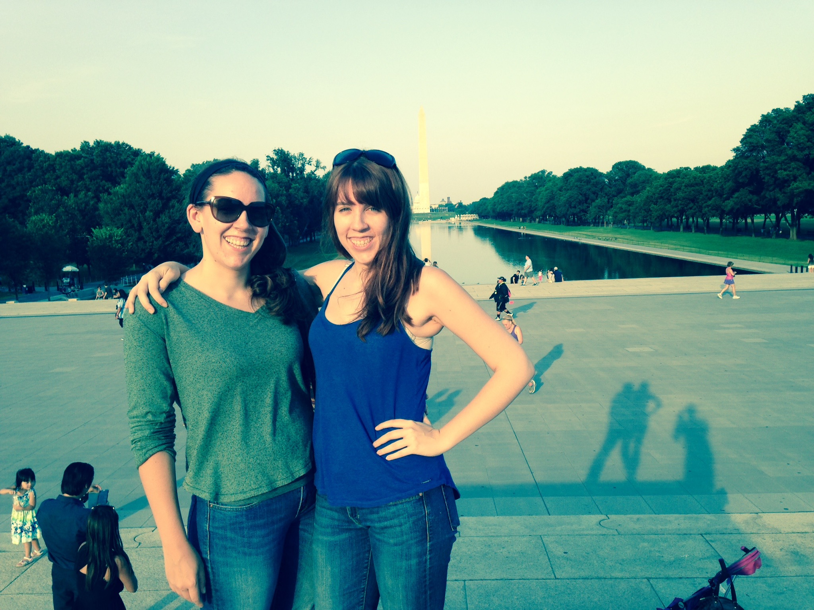

About Me
I was born and raised throughout the Bay Area but I don't call any one city home. I didn't get too far for college, earning my bachelor’s degree in Molecular and Cellular Biology from UC Berkeley (Go Bears!!!). It wasn’t until a friend asked me to attend a Women Who Code event during my senior year that I discovered the power of computer science. After graduating in 2014, I began working for UCSF in a neuro-oncology lab, where I explored the mitotic origins of glioblastomas. Although my research focused on stem cells, I often relied on the programming skills I acquired during my senior year for my data analysis, further highlighting just how pervasive computer science has become. Motivated to help further diversify the field of computer science, I joined Teach for America, where I began teaching Web Design and AP Computer Science Principles at Madison Park Academy. Here, I am constantly inspired by my students and am excited to continue to empower my students to explore STEM fields and careers. I love to travel when I can and believe the best way to experience a new culture is through food!
